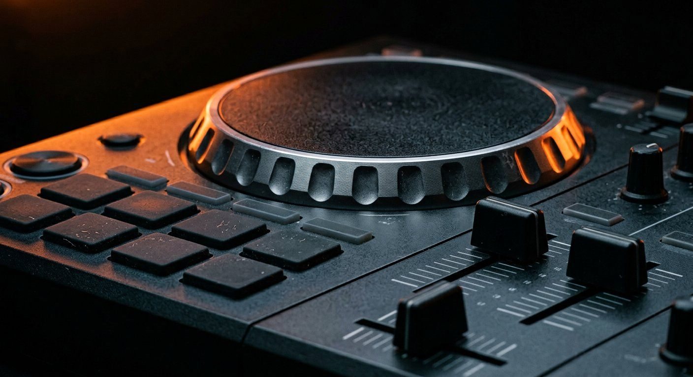

Best DJ Controllers Under $500 in 2026
Under-$500 DJ controllers in 2026: current Hercules Inpulse 500 buying advice, with archived Pioneer FLX6-GT, discontinued Reloop Beatmix 4 and over-budget RANE ONE clearly separated..

Disclosure: This page uses affiliate links. We may earn a commission at no extra cost to you. Full disclosure →
Under $500 can buy a capable current DJ controller, but this is not a list of four models currently available new within budget. The Hercules DJControl Inpulse 500 remains a marketed option; the Pioneer DDJ-FLX6-GT is archived, the Reloop Beatmix 4 is discontinued, and the RANE ONE costs substantially more new. Confirm the exact retailer offer before treating any model as in budget.
Current new-buy starting point: Hercules DJControl Inpulse 500. Conditional used/clearance alternatives: Pioneer DDJ-FLX6-GT and Reloop Beatmix 4, only with a verified offer at or below $500 and a checked software licence. Over-budget reference: RANE ONE. Manufacturer sources: Hercules product page, Reloop discontinued notice, and Pioneer DJ Store refurbished listing (listed at $551.65 and out of stock when checked November 2, 2026). These are documented product and seller statuses, not a claim that every retailer has identical inventory or prices. This is document-based research, not hands-on testing.
Pioneer DDJ-FLX6-GT: Archived — Conditional Used/Clearance Buy
Pioneer's archived DDJ-FLX6-GT offers Serato DJ Pro and rekordbox compatibility, four software-deck controls, large jog wheels and RGB pads. It is not a verified current new under-$500 recommendation. The Pioneer DJ Store's refurbished offer was $551.65 and out of stock on November 2, 2026. Consider it only when a specific used or clearance listing is actually at or below $500, and verify condition, returns and software unlocks before paying.
- 4-channel mixer with dedicated controls and 3-band EQ + kill switches
- Full-size capacitive jog wheels with on-jog track-position display and Jog Cutter scratch assist (static jogs — not motorized)
- 8 RGB performance pads per deck (Hot Cue, Loop, Sampler, Slicer modes)
- Merge FX one-knob transitions, plus per-channel software FX
- Built-in USB audio interface
- Software: unlocks rekordbox and Serato DJ Pro; VirtualDJ supported with its own licence
- Weight: approx. 8.6 lbs (3.9 kg)
Drawbacks: Archived model — remaining stock is thinning and the DDJ-GRV6 is the current successor. RCA-only master output (no XLR), so allow for adapters on larger systems. Static jogs: no moving-platter feel.
Search Pioneer DDJ-FLX6-GT controller on Amazon →Discontinued: Denon MC7000
The Denon MC7000 is no longer sold new. Denon's product URL returned a "Page not found" error in our October 2026 check, and several US sellers list it as discontinued. Used units may still appear, so check condition, software licensing and warranty before buying one. It is not included in the picks above.
The honest stretch: RANE ONE (not under $500 new)
Scratch DJs keep asking about this one, so here is the straight version: the RANE ONE is not a $500 controller — it launched at $1,499 and still sells far above this bracket new. What the money buys is the genuine turntablist layout in controller form: two 7-inch motorized platters and Rane's Mag Four crossfader (the Mag Four is the fader — some roundups muddle it into the jogs, and earlier drafts of this page did too). If a clean used unit lands near your budget it is the scratching benchmark in controller form; otherwise it is the reference point the FLX6-GT and Beatmix 4 approximate for a third of the money.
- 2-channel mixer (focused layout for performance DJs)
- Motorized 7-inch platters with vinyl-style tops and turntable start/stop behaviour
- 8 multi-mode performance pads per deck (16 total, velocity-sensitive)
- Mag Four tension-adjustable crossfader — user-replaceable, and the turntablist centrepiece
- 24-bit/48kHz USB audio interface built-in
- Metal construction + durable build from Rane's pro heritage
- Unlocks Serato DJ Pro; also supported by djay Pro and VirtualDJ
- XLR main + XLR booth outputs, dual USB for handoffs
- Weight: 23.6 lbs (10.7 kg) — a serious lift
Drawbacks: Price — two to three times this guide's budget new. Only 2 channels. At 10.7 kg it is not a casual carry.
Search RANE ONE on Amazon →Reloop Beatmix 4: Discontinued — Used-Market Alternative
Reloop explicitly marks both the Beatmix 4 and Beatmix 4 MK2 as discontinued. This is a used-market option, not a currently manufactured budget pick. Its four software-deck controls, Serato-oriented layout and pads may appeal to a buyer who finds a sound used unit, but verify the exact generation, operating-system support, Serato entitlement, physical condition and return policy. Reloop's MK2 discontinued listing is the primary availability source.
Hercules DJControl Inpulse 500: Current In-Budget Starting Point
Unlike the archived/discontinued alternatives above, the Hercules DJControl Inpulse 500 is still marketed by its manufacturer. Its Beatmatch Guide indicators, integrated audio interface, hardware AUX input and sturdy metal backing plate make it a defensible first controller to price-check under $500. It supports DJUCED and free Serato DJ Lite; Serato DJ Pro is a separate upgrade. Verify current specifications and availability with Hercules and confirm a US checkout price before ordering.
Side-by-Side Comparison
These two comparison columns are reference hardware, not two verified in-budget new-buy picks. The FLX6-GT is archived and the RANE ONE is over budget; the currently marketed Inpulse 500 is discussed above.
| Feature | Pioneer DDJ-FLX6-GT | Rane One |
|---|---|---|
| Channels | 4 | 2 |
| Jog Wheel Type | Static capacitive (full-size) | Motorized 7" platters |
| Performance Pads | 8 per deck (RGB) | 8 per deck (RGB) |
| XLR Outputs | No (RCA only) | Yes — main + booth |
| Software Included | rekordbox + Serato DJ Pro unlock | Serato DJ Pro ✓ |
| Multi-platform | Yes (Serato + RB) | Serato only |
| Scratch Optimized | No | Yes (motorized platters + Mag Four fader) |
| Weight | 8.6 lbs | 23.6 lbs |
| Replaceable Crossfader | No | Yes (Mag Four) |
Quick Verdict
- Best currently marketed starting point: Hercules DJControl Inpulse 500 — check a real under-$500 offer; DJUCED and Serato DJ Lite are supported, with Pro separately licensed.
- Four-deck used/clearance option: Pioneer DDJ-FLX6-GT — archived; buy only if a specific listing is under budget and the licence/condition check passes.
- Other used option: Reloop Beatmix 4 — discontinued by Reloop, not a new-stock recommendation.
- Best for gigging: check the outputs and software licence on each spec page before choosing; balanced XLR outputs are uncommon at this price.
- Best for Scratching / Turntablism: honestly, none in budget — the RANE ONE is the real thing (motorized platters, Mag Four fader) but costs two to three times the budget new; find one used or save toward it.
For a new purchase, start with a currently marketed controller and verify the final price and software entitlement. Archived or discontinued four-deck hardware is a used/clearance decision with different warranty and compatibility risks. Gigging DJs must check outputs against their PA; scratch-focused buyers should not mistake the RANE ONE for an under-$500 new option.
Bottom line: Start with the Hercules DJControl Inpulse 500 for a currently marketed model that may fit the budget. Treat the FLX6-GT and Beatmix 4 as conditional used/clearance buys, not default new recommendations; verify an actual under-$500 checkout price, software access and returns. Search current Inpulse 500 offers →
Shop on Amazon
Browse DJ controllers under $500 — filter by price, verified ratings, and Prime eligibility.
Also Available on zZounds
Compare DJ controllers across retailers — interest-free payment plans available.
Software Pairing for Best DJ Controllers Under $500 (2026)
Choosing the right controller is only half the battle; ensuring it plays nice with your preferred software is equally critical. In 2026, the landscape is dominated by three main players:
- Serato DJ Pro/Lite: The industry standard for hip-hop and open-format DJs. Controllers like the Rane One and Reloop Beatmix 4 are optimized specifically for Serato's low-latency engine.
- Rekordbox: The native ecosystem for Pioneer gear. If you plan on eventually playing in clubs using USB sticks, learning the Pioneer workflow on the DDJ-FLX6-GT is your best long-term investment.
- DJUCED/VirtualDJ: Often bundled with Hercules units, these are excellent for beginners who want highly visual interfaces and easy-to-use stem-separation features that don't require high-end computer specs.
Before you buy: five quick checks
Price is the easy part. These are the checks that decide whether the purchase still looks sensible six months in.
Frequently Asked Questions
What is the best DJ controller under $500 in 2026?
For a current new purchase, start by checking the Hercules DJControl Inpulse 500 against a real under-$500 seller offer. The Pioneer DDJ-FLX6-GT is archived and the Reloop Beatmix 4 is discontinued; neither is a verified in-stock new under-$500 pick. Confirm the exact price, software licence and return terms.
Why does an under-$500 guide mention the RANE ONE?
Because scratch DJs always ask. The RANE ONE is the motorized-platter reference — two 7-inch motorized platters and the Mag Four crossfader — but it is not a $500 controller: it launched at $1,499 and still sells well above this bracket new. Treat it as the used-market stretch or the target to save for, not an in-budget pick.
Do DJ controllers under $500 come with software?
Software entitlements vary by model. Hercules Inpulse 500 supports DJUCED and free Serato DJ Lite; Pro requires a separate upgrade. The archived FLX6-GT offers rekordbox and Serato DJ Pro hardware unlocks, while a used Beatmix 4 needs a model-specific licence check. The RANE ONE is over budget new. Verify before buying.
Can I DJ professionally with a $500 controller?
Yes, many mobile and event DJs use controllers at gigs. Check each model's outputs against the venue's requirements, and note that most club residencies provide venue CDJ rigs, so a reliable $500 controller handles practice and mobile gigs without compromise. Upgrade to a standalone media player setup only when you're booking residencies requiring specific gear.